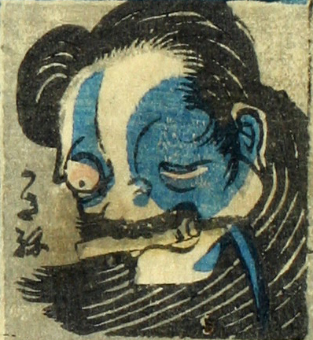

累；カサネ，女；オンナ

累。右目を開け、口に鎌をくわえている。顔の一部が青い。
著作者：芳盛／出典：親書誌：U426_nichibunken_0073：しん板化物尽し；シンパンバケモノヅクシ／日付：2006／資源識別子：U426_nichibunken_0073_0013_0000
Copyright (c)2010- International Research Center for Japanese Studies, Kyoto, Japan. All rights reserved.